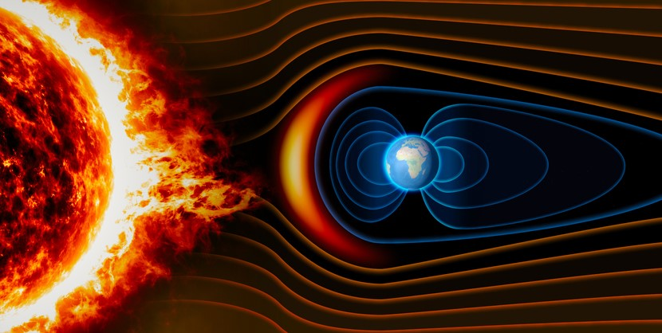

DEVELOPED BY ROBERT ZULU THE PROFESSIONAL PROGRAMMER

EARTH'S MAGNETIC FIELD
Earth's magnetic field, also known as the geomagnetic field, is the magnetic field that extend from the Earth's interior to where it meets the solar wind, a stream of charged particles emanating from the Sun. Its magnitude at the Earth's surface ranges from 25 to 65 microtesla (0.25 to 0.65 gauss). Roughly speaking it is the field of a magnetic dipole currently tilted at an angle of about 10 degrees with respect to Earth's rotation axis, as if there were a bar magnet placed at that angle at the center of the Earth. Unlke a bar magnet, however, Earth's magnetic field changes over time because it is generated by a geodynamo (in Earth's case, the motion of molten iron alloys in its outer core).
The magnetosphere is the region above the ionosphere and extends several tens of thousands of kilometers into space, protecting the Earth from the charged particles of the solar wind and cosmic rays that would otherwise strip away the upper atmosphere, including the ozone layer that protects the Earth from harmful ultraviolet radiation.
The North and South magnetic poles wander widely, but sufficiently slowly for ordinary compasses to remain useful for navigation. However, at irregular intervals averaging several hundred thousands years, the Earth's field reverses and the North and South Magnetic Poles relatively abruptly switch places. These reversals of the geomagnetic poles leave a record in rocks that are of value to paleomagnetists in calculating geomagnetic fields in the past. Such information in turn is helpful in studying the motions of continents and floors in the process of plate tectonics.
EARTH'S MAGNETIC FIELD
Earth's magnetic field and spectacular effects such as the aurora borealis in the upper atmosphere. Earth's magnetic field deflects the solar wind around our planet, protecting our atmosphere . Where it not for the presence of the magnetic field our atmosphere would have been steadily stripped away, just like the envelope of gases that once surrounded Mars. The red planet lost its protective magnetic field as the smaller planet cooled down more rapidly than Earth, losing its hot liquid core. Mars retains just isolated remnants of its atmosphere where pockets of relict magnetism remain. Although our planet's magnetic field protects us from the erosion of our atmosphere, we are still subject to the harmful effects of occasional solar eruptions that hurl more intense pulses of X rays, ultraviolet radiation, and charged particles toward Earth. Living on the planet's surface we are at little risk of direct harm from these emissions but they pose a threat to astronauts and spacecraft and have the potential to cause disruption of our communication and power supply systems. We depend on over six hundred operational satellites to provide information for a host of needs on Earth, including communications, navigation, and weather forecasting. Many of these satellites would be debilitated by streams of solar radiation. Intense streams of charged particles can disrupt Earth's magnetic field, generating electrical currents that result in power surges leading to blackout conditions as electrical systems shut down